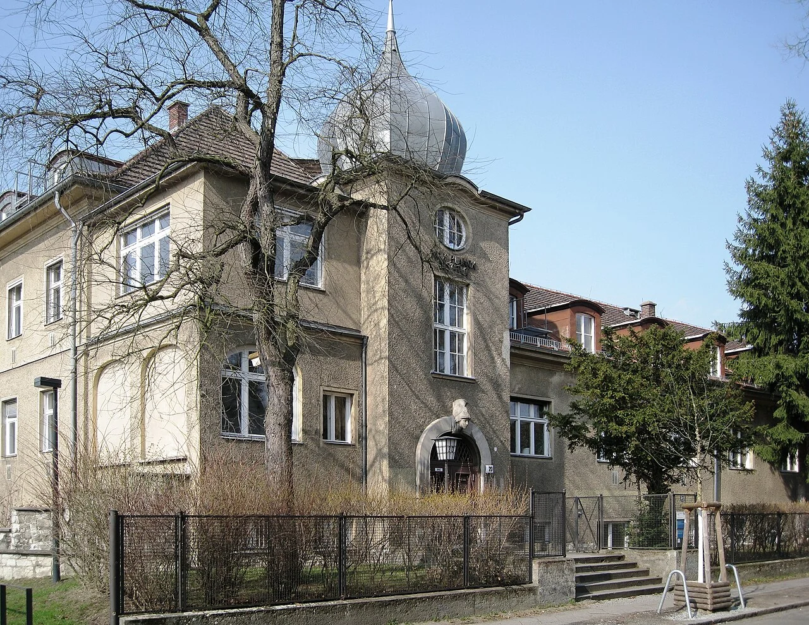
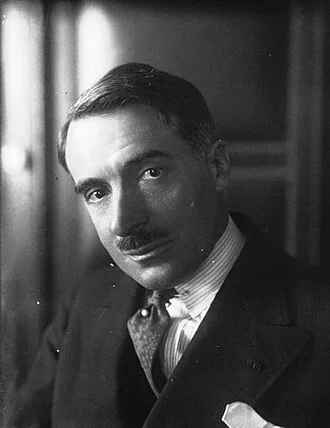
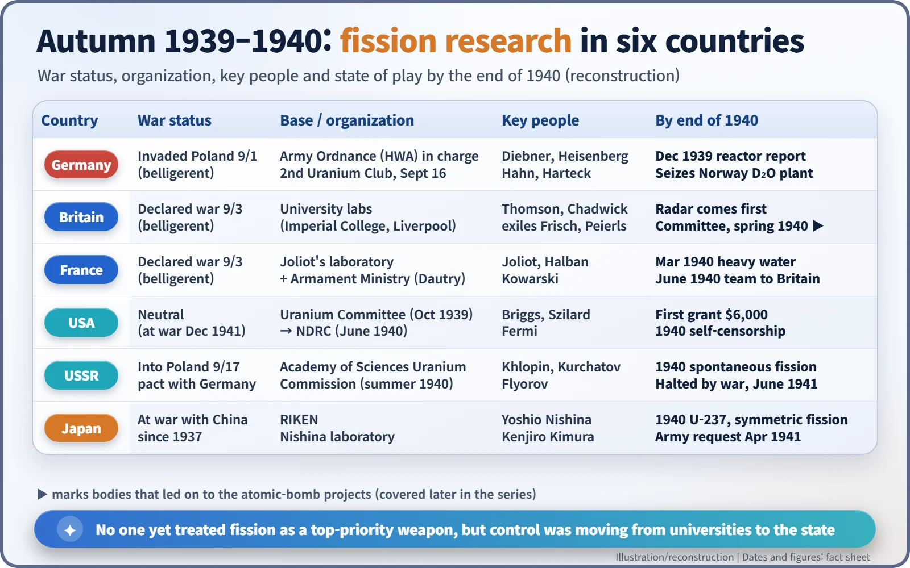
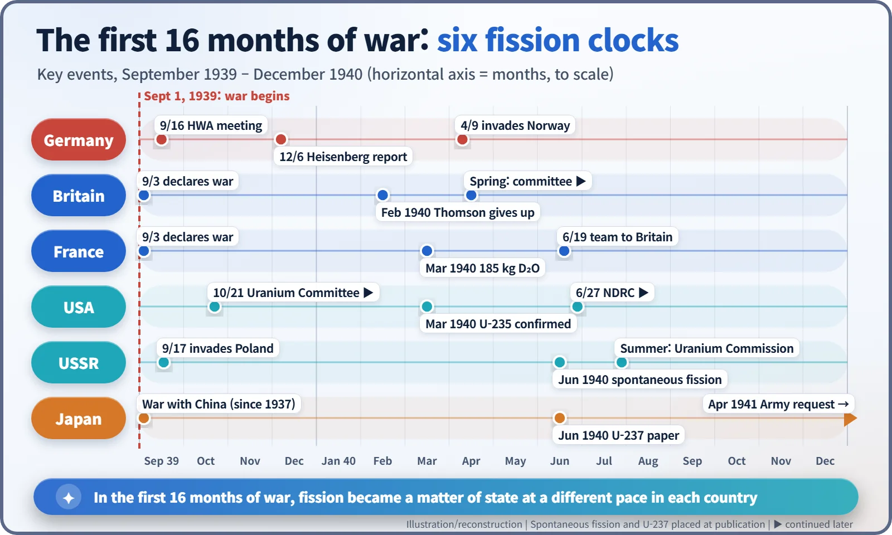

Nuclear History · 074
A Lab Coat Under the Uniform — Fission Research in Six Countries at the Outbreak of World War II (1939–1940)
War began on the same day the Bohr–Wheeler fission paper appeared, and within 16 months fission research was passing from universities to governments.
On September 1, 1939, Germany invaded Poland, and on the same day Physical Review published Bohr and Wheeler's theory of fission. This is a country-by-country tour of where fission research stood in Germany, Britain, France, the United States, the Soviet Union and Japan between the outbreak of war and the end of 1940, when the work began moving from university laboratories into the hands of the state.
Two events, one date
In the early hours of September 1, 1939, an old German battleship anchored off the Baltic port of Danzig (today's Gdańsk) opened fire on a small Polish garrison. German troops poured across the Polish border, and two days later, on September 3, Britain and France declared war on Germany. The Second World War had begun.
By an odd coincidence, the same date appears on a landmark of physics. On September 1, 1939, the American journal Physical Review published Niels Bohr and John Wheeler's theory of nuclear fission. Barely nine months had passed since chemists in Berlin found that uranium nuclei could split in two. The newest discovery in science and the largest war in history ended up sharing a date stamp.
So where did fission research actually stand when the war began? Let's take an imaginary business trip around six laboratories and find out.
Stop one: Berlin — the army knocks first
Germany, the country where fission was discovered, moved early. In spring 1939 a group of physicists linked to the education ministry had formed what became known as the "Uranium Club", but it faded when its members were drafted. The army filled the gap. On September 16, 1939, physicist Kurt Diebner (1905–1964) of the Army Ordnance Office (Heereswaffenamt, HWA) convened a second meeting in Berlin, and Werner Heisenberg (1901–1976) soon joined. The Kaiser Wilhelm Institute for Physics in Berlin-Dahlem was placed under army authority. [4]

On December 6, 1939, Heisenberg sent the army a report on the possibility of extracting energy from uranium fission, laying out the theory of a neutron chain reaction; a second report followed on February 29, 1940. Why the German effort never produced a bomb is still debated by historians, and we will leave that question open here. [2] [3]
Stop two: London — radar comes first
In Britain the top scientific priority was not fission but radar, the technology that could spot German bombers before they arrived. At Imperial College, George Paget Thomson tested whether natural uranium could sustain a chain reaction, and by around February 1940 he reportedly concluded it was not worth pursuing.
The twist came from an unexpected place. Two refugee physicists, Otto Frisch and Rudolf Peierls, were classed as "enemy aliens" and so could not be cleared to work on secret radar. Instead they asked a different question: how much uranium would a bomb actually need? Their answer, written up in spring 1940, would set Britain in motion, but that story belongs to the next chapter of this series.
Stop three: Paris — a laboratory with a minister on its side
In Paris, Frédéric Joliot and his colleagues Hans von Halban and Lew Kowarski were far enough ahead to file reactor-related patents in May 1939. Once the war began, Raoul Dautry (1880–1951), head of the newly created Ministry of Armament, backed their work. That support led to a daring operation in March 1940 to secure 185 kg of heavy water from Norway. Then France fell in June 1940, and Halban and Kowarski crossed to Britain carrying the heavy water and their papers.

Stop four: Washington — a neutral country's $6,000
The United States was still out of the war, yet things were stirring. On October 11, 1939, a letter bearing Albert Einstein's signature reached President Franklin Roosevelt. On October 21, an Advisory Committee on Uranium chaired by Lyman J. Briggs met for the first time and found $6,000 for uranium and graphite. On June 27, 1940, the new National Defense Research Committee (NDRC) absorbed it. The inside story of the letter and the committee is for a later chapter. [1]
Stop five: Leningrad — the calm before the storm
The Soviet Union had signed a non-aggression pact with Germany in August 1939 and invaded Poland from the east on September 17, but it would not fight Germany until June 1941. In the meantime Yakov Zeldovich and Yulii Khariton worked out the conditions for a chain reaction, and in 1940 Georgy Flyorov and Konstantin Petrzhak reported that uranium can split on its own without any neutron, a process called spontaneous fission. In summer 1940 the Academy of Sciences set up a Uranium Commission.
Stop six: Tokyo — a country already at war
Japan had been at war with China since 1937. At RIKEN, Yoshio Nishina's team was strong enough to report uranium-237 and "symmetric fission" in 1940, but the army's formal request to study nuclear weapons came only in April 1941.

Trip report: between a distant possibility and a potential threat
After six stops, one pattern stands out. In autumn 1939 no country was treating fission as its top-priority weapon. Nobody was sure that a chain reaction would really work, or how enough uranium-235 could ever be collected. Fission sat somewhere between a distant possibility and a potential threat.
Yet the owner of the research was clearly changing. Work that began as professors' curiosity was migrating into the files of army ordnance offices, armament ministries and government committees. In the United States, scientists began voluntarily holding back fission papers from spring 1940. The era of openly shared knowledge was drawing to a close.

A reactor that produces energy and a bomb that explodes start from the same physics. At that fork in the road, the war tipped the scales toward weapons first. It would take more than another decade before fission lit up a power station.